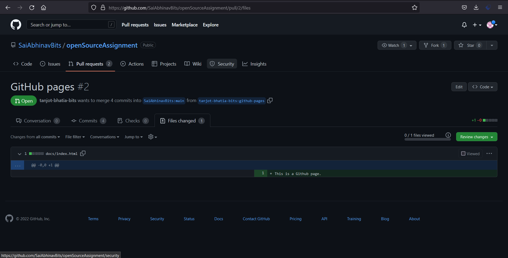
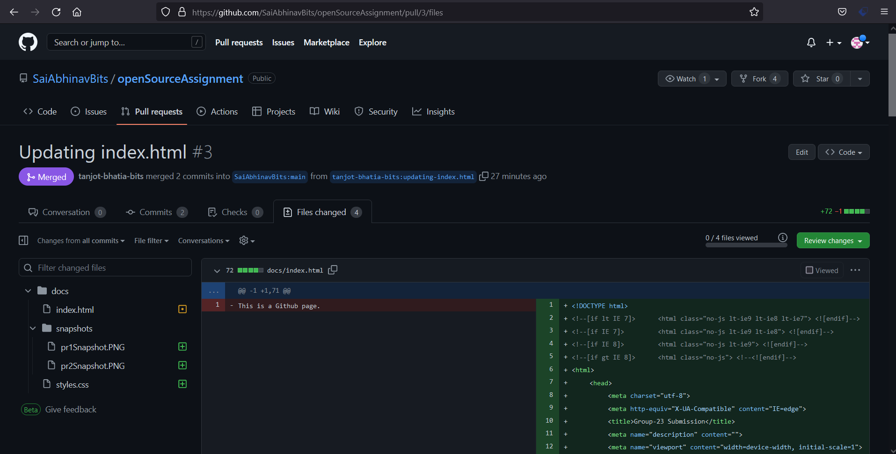

https://github.com/SaiAbhinavBits/openSourceAssignment
- Tanjot Bhatia (2021mt93263): https://github.com/tanjot-bhatia-bits/OpenSourceAssignment
- Tanjot Bhatia (2021mt93263):
- Tanjot Bhatia (2021mt93263):
- Link to PR#1:
https://github.com/SaiAbhinavBits/openSourceAssignment/pull/1

- Link to PR#2:
https://github.com/SaiAbhinavBits/openSourceAssignment/pull/2
 - Link to PR#3:
https://github.com/SaiAbhinavBits/openSourceAssignment/pull/3

- Link to PR#1: